Loading ...
|
4-2-3-1
|
Belgium | 0 | - | 0 | IR Iran |
5-4-1
|
| HT 0-0 | ||||||
|
FIFA World CupSunday 21 June 2026
|
||||||
- Venue
- Los Angeles Stadium
- Attendance
- 70,317
- Referee
- Darío Herrera
Yellow card3'
R. Lukaku
- 3
Substitution58'
T. Meunier
T. Castagne
A. Saelemaekers
D. Lukébakio
N. Raskin
H. Vanaken
Red card66'
N. Ngoy
Substitution73'
R. Lukaku
A. Theate
Substitution87'
K. De Bruyne
M. Fernandez-Pardo
Whistle45+9'
45+9'
Yellow card33'
S. Ezatolahi
Substitution46'
S. Hardani
A. Jahanbakhsh
- 2
Substitution66'
M. Mohebbi
M. Torabi
E. Hajisafi
M. Mohammadi
Substitution79'
S. Ghoddos
S. Moghanloo
Substitution85'
S. Ezatolahi
A. Hosseinzadeh
Belgium | |
|---|---|
Goalkeeper | |
| 1 | T. Courtois |
Defender | |
| 4 | B. Mechele |
| 5 | M. De Cuyper |
| 15 | T. Meunier 58' |
| 25 | N. Ngoy 66' |
Midfielder | |
| 7 | K. De Bruyne 87' |
| 8 | Y. Tielemans |
| 10 | L. Trossard |
| 22 | A. Saelemaekers 58' |
| 23 | N. Raskin 58' |
Forward | |
| 9 | R. Lukaku 3'73' |
Substitutes | |
| 3 | A. Theate 73' |
| 14 | D. Lukébakio 58' |
| 20 | H. Vanaken 58' |
| 21 | T. Castagne 58' |
| 26 | M. Fernandez-Pardo 87' |
IR Iran | |
Goalkeeper | |
| 1 | A. Beiranvand |
Defender | |
| 2 | S. Hardani 46' |
| 3 | E. Hajisafi 66' |
| 4 | S. Khalilzadeh |
| 13 | H. Kanani |
| 19 | A. Nemati |
Midfielder | |
| 6 | S. Ezatolahi 33'85' |
| 8 | M. Mohebbi 66' |
| 14 | S. Ghoddos 79' |
| 23 | R. Rezaeian |
Forward | |
| 9 | M. Taremi |
Substitutes | |
| 5 | M. Mohammadi 66' |
| 7 | A. Jahanbakhsh 46' |
| 16 | M. Torabi 66' |
| 18 | A. Hosseinzadeh 85' |
| 20 | S. Moghanloo 79' |


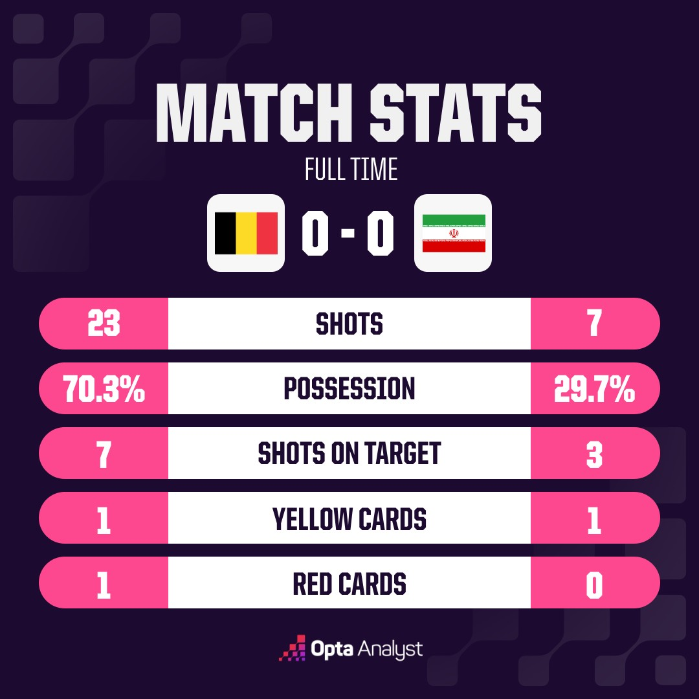
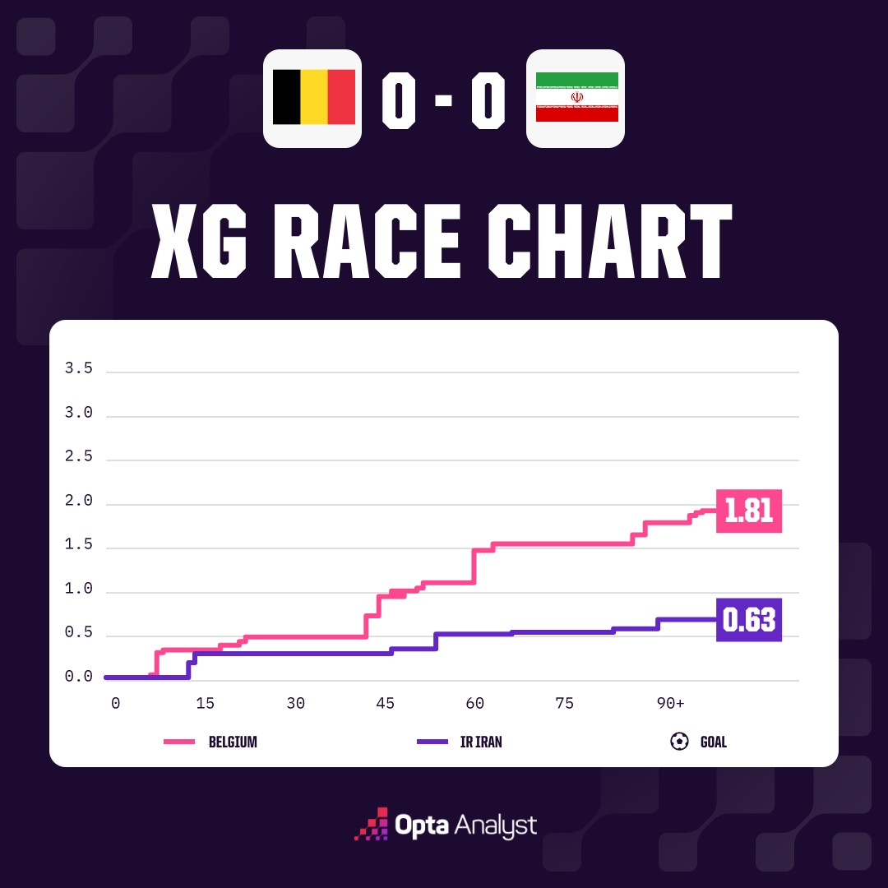
97'
IR Iran have failed to win in their last 3 games in the FIFA World Cup, their last joint longest winless streak was from 20th June 2018 to 21st November 2022.
97'
Belgium have failed to win in their last 4 games in the FIFA World Cup, their last longer winless streak was from 29th June 1994 to 10th June 2002, a run of 7 games.
97'
Belgium are undefeated in their last 3 games in the FIFA World Cup, their last longer unbeaten streak was from 18th June 2018 to 6th July 2018, a run of 5 games.
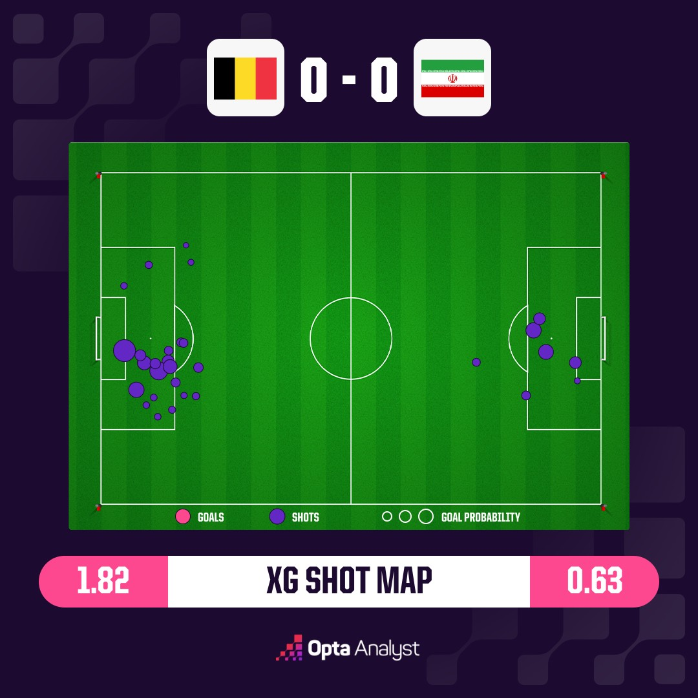
90+6'
That's it! The referee blows the whistle and we have reached full-time. The final score at Los Angeles Stadium is Belgium 0-0 Iran.
90+5'
That is a disappointing effort from Dodi Lukébakio, who went for glory but got their attempt wrong, and the shot sailed off target. A frustrating moment for Belgium.
90+4'
MISS! A shot from Matias Fernandez-Pardo ends up being off target. They might have done a bit better with that one, but it remains Belgium 0-0 Iran.
90+3'
MISS! A shot from Brandon Mechele ends up being off target. They might have done a bit better with that one, but it remains Belgium 0-0 Iran.
88'
That’s offside! A switched-on defensive line from Belgium, as they step up at the right time to catch Milad Mohammadi offside, and the assistant referee’s flag is up.
88'
Shot blocked! Amirhossein Hosseinzadeh unleashes an attempt at goal, but the ball does not reach its target thanks to Hans Vanaken, who makes a solid block to stem the danger – for now.
87'
Kevin De Bruyne’s match is over as Belgium decide to make a substitution. Matias Fernandez-Pardo enters the field in what looks like a tactical change.
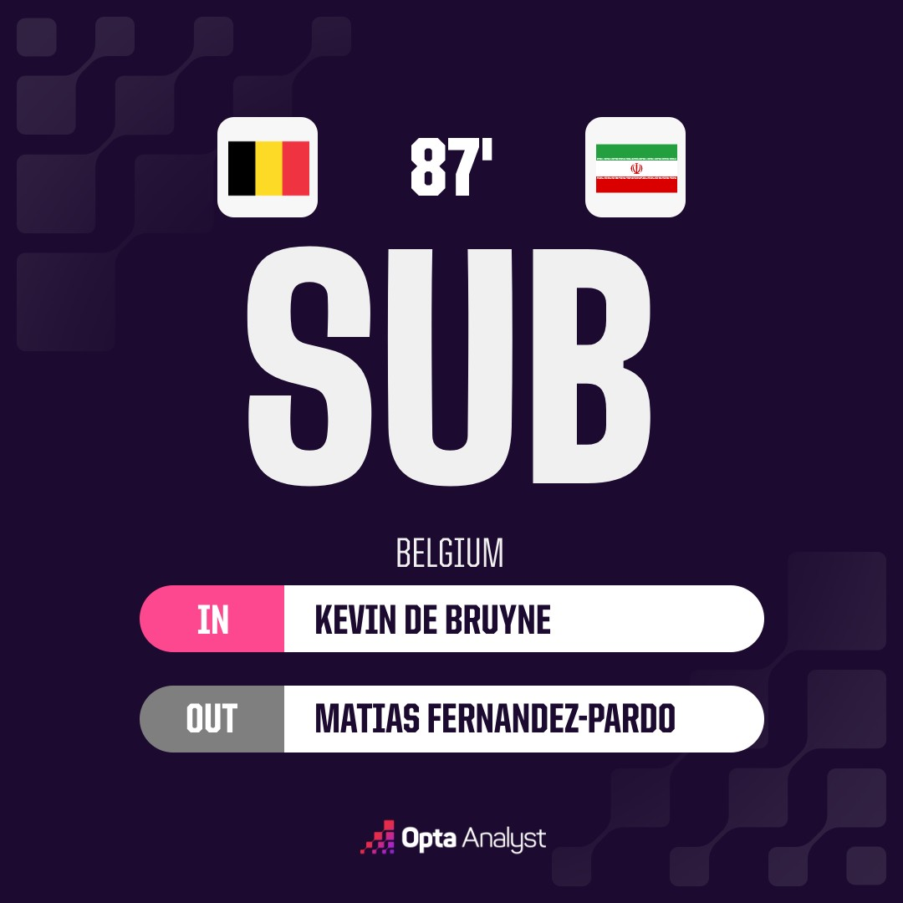
87'
Offside! Well-timed defensive work from Belgium, as their back line steps up and catches Shahriyar Moghanloo offside. They had just strayed too early, as Iran search for the goal they need.
86'
Alireza Beiranvand has made 7 saves, his highest total in a single match in the FIFA World Cup.
86'
Maxim De Cuyper has attempted 5 shots, his highest total in a single match in the FIFA World Cup.
86'
CLOSE! Maxim De Cuyper gets into a decent shooting position inside the Iran area, and manages to find space to get an effort off. However, Alireza Beiranvand is equal to it.
85'
Saeid Ezatolahi’s match is over as Iran decide to make a substitution. Amirhossein Hosseinzadeh enters the field in what looks like a tactical change.
84'
MISS! A shot from Hans Vanaken ends up being off target. They might have done a bit better with that one, but it remains Belgium 0-0 Iran.
84'
MISS! The score remains 0-0, with Iran relieved after Belgium’s Youri Tielemans goes for goal but sends their attempt off target. Not one to write home about, that one.
83'
A free-kick in a dangerous position now for Belgium, after a foul from Shoja Khalilzadeh on Dodi Lukébakio. Can Belgium make Iran pay for that rashness from Shoja Khalilzadeh?
81'
That was hopeful! A bit of a punt from Saeid Ezatolahi, who goes for goal from distance, but Thibaut Courtois makes the save.
80'
Free-kick! A foul from Alireza Jahanbakhsh on Maxim De Cuyper. It is well away from Iran’s goal, so it is unlikely to result in a chance for Belgium.
80'
Neither side wants to be the first to blink here. Iran with another patient 20+ pass sequence - in these dying minutes, one mistake could be fatal.
79'
The Iran manager is looking to the substitutes’ bench, bringing on Shahriyar Moghanloo in place of Saman Ghoddos. Will the change make a difference? Let’s find out!
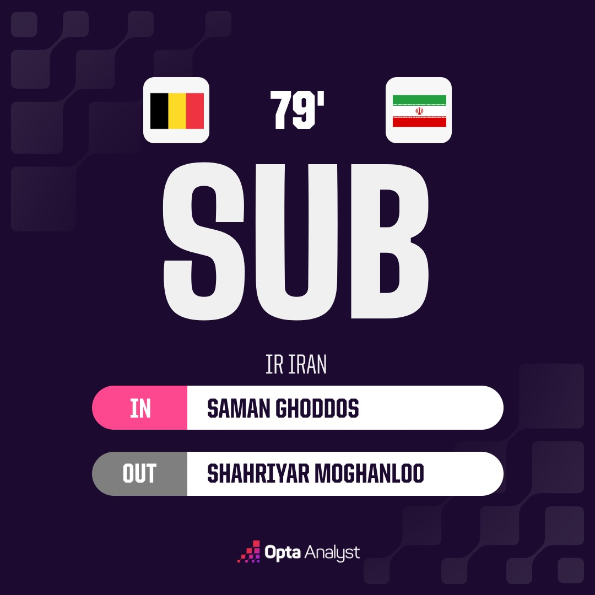
76'
There are 15 minutes plus added time to go in this match. Belgium have had more of the ball so far with a possession figure of 75.10%, while Iran have had 24.90%.
75'
This game is certainly in a bit of a lull now, with neither team having had an attempt at goal in the past 10 minutes. It could do with something to spark it into life. Iran have had more possession during the quiet spell, but are yet to do much with it.
73'
The Belgium manager is looking to the substitutes’ bench, bringing on Arthur Theate in place of Romelu Lukaku. Will the change make a difference? Let’s find out!
67'
Nathan Ngoy has received a red card - Belgium's first sending off in the 2026 FIFA World Cup , and their first since 26th June 2014 against Korea Republic.
67'
Nathan Ngoy is sent off! Could that be the decisive moment in this game? With the score level at 0-0, Belgium have now seen their numbers reduced, and Iran will look to make their numerical advantage pay dividends and take the lead.
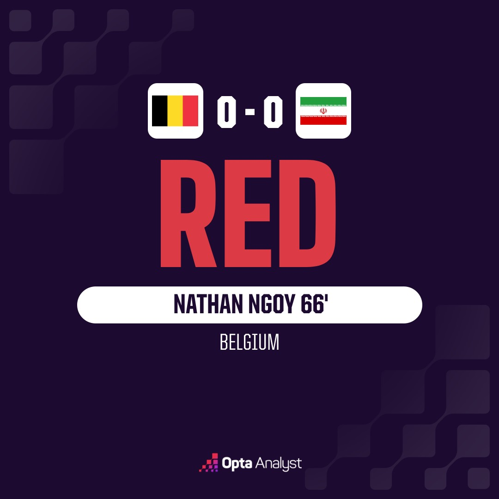
66'
Free-kick! A foul from Nathan Ngoy on Mehdi Taremi. It is well away from Belgium’s goal, so it is unlikely to result in a chance for Iran.
66'
Iran are making a tactical change. Ehsan Hajisafi is leaving the field and in their place comes Milad Mohammadi – we will soon see if this switch has the desired impact.
66'
Just over an hour played, so let’s check on the shot count for each side. Iran have had 5, getting 2 of those on target. Belgium, meanwhile, have had 6 efforts on target, and 17 overall.
66'
Mohammad Mohebbi’s match is over as Iran decide to make a substitution. Mehdi Torabi enters the field in what looks like a tactical change.
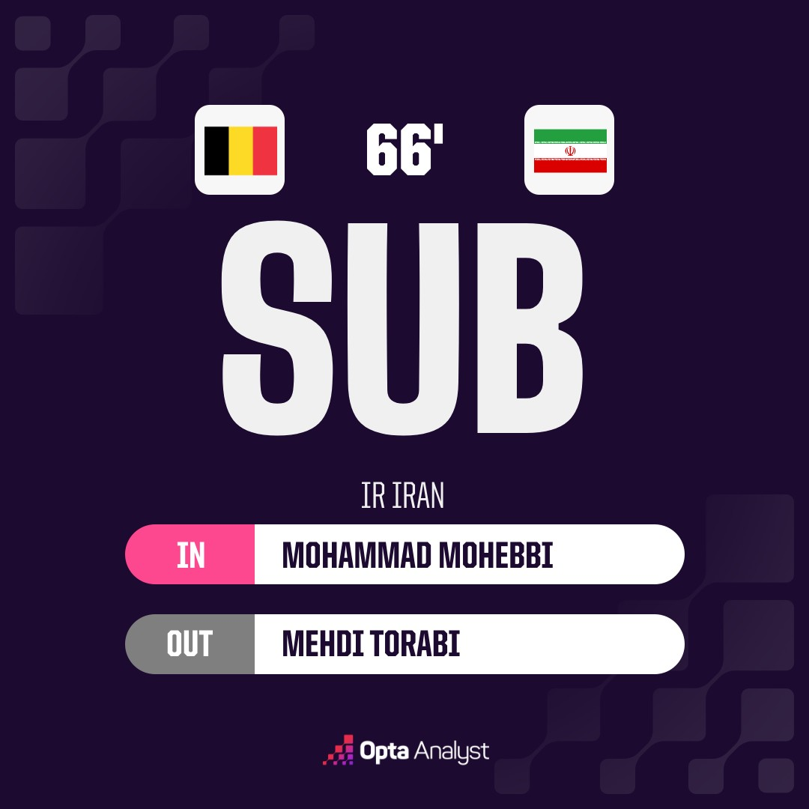
65'
A chance goes begging as Shoja Khalilzadeh gets off a shot that does not hit the target. They might have done better with that one, but instead it is a goal-kick to Belgium.
64'
Saman Ghoddos goes in on Kevin De Bruyne and concedes a foul. The free-kick is not in a particularly dangerous area from Iran’s viewpoint, though.
63'
There is plenty of possession for Belgium, with 76.84% compared to Iran 23.16 % in the last 15 minutes. However, Belgium have not been able to turn that dominance of the ball into a goal.
62'
That is a disappointing effort from Hans Vanaken, who went for glory but got their attempt wrong, and the shot sailed off target. A frustrating moment for Belgium.
62'
CLOSE! Dodi Lukébakio gets into a decent shooting position inside the Iran area, and manages to find space to get an effort off. However, Alireza Beiranvand is equal to it.
59'
Alireza Beiranvand has made 5 saves, the first time he has made at least 5 saves in a match in the FIFA World Cup since facing New Zealand on 16th June 2026 (6 saves).
59'
MISS! How has that not gone in? A complete lack of composure shown from Maxim De Cuyper, who squanders a golden chance for Belgium, whose coach looks on frustrated from the touchline. A real let off for Iran!
58'
Nicolas Raskin’s match is over as Belgium decide to make a substitution. Hans Vanaken enters the field in what looks like a tactical change.
58'
Substitution! Dodi Lukébakio replaces Alexis Saelemaekers for Belgium as the manager shuffles the pack. Can Dodi Lukébakio make an impression as this match continues?
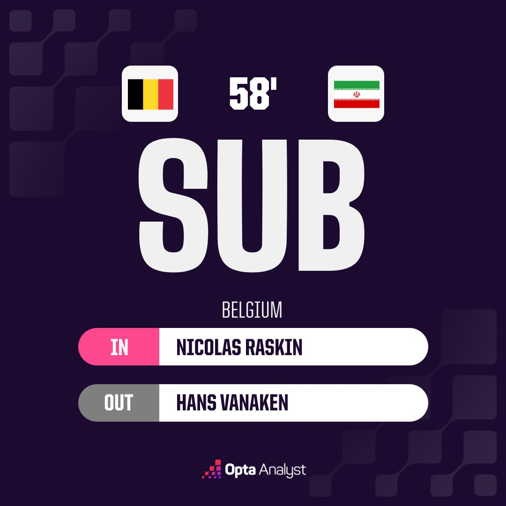
58'
A substitution for Belgium sees Thomas Meunier replaced by Timothy Castagne. There does not appear to be any obvious sign of an injury, so that is a tactical switch.
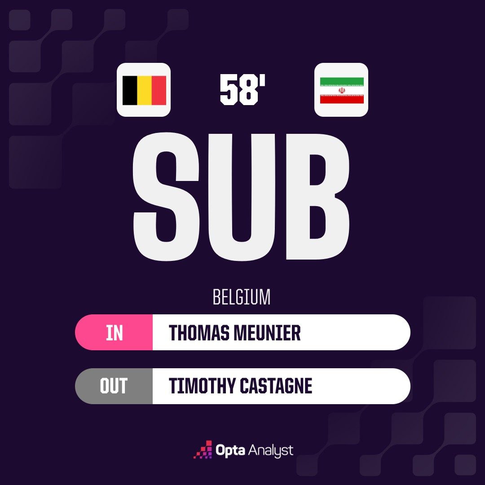
53'
HUGE CHANCE GOES BEGGING! What a miss that is from Mehdi Taremi, who looked all set to score a goal that their team need, but instead fails to direct their attempt into the back of the net. That was a big, big opportunity for Iran.
51'
Offside! Leandro Trossard thought they were through on goal, but the Iran defence stepped up in time to catch them offside, and the assistant referee puts their flag up.
51'
That might have been going in! A fantastic block from Shoja Khalilzadeh, who gets in the way of a goal-bound effort from Maxim De Cuyper. Would the goalkeeper have been beaten? We will never know.
50'
A chance goes begging as Alexis Saelemaekers gets off a shot that does not hit the target. They might have done better with that one, but instead it is a goal-kick to Iran.
50'
Corner! The ball goes behind and now Belgium will aim to deliver a good ball into the penalty area and test that Iran defence, which has been frustrating them in recent minutes.
49'
A chance now for Belgium to get a good delivery into the box, after the ball is diverted behind for a corner. Belgium have been pushing for what would be a key goal, but Iran have stood firm so far.
47'
A free-kick in a dangerous position now for Belgium, after a foul from Alireza Jahanbakhsh on Leandro Trossard. Can Belgium make Iran pay for that rashness from Alireza Jahanbakhsh?
46'
BLOCK! An intervention from Shoja Khalilzadeh might have just prevented a goal, with the defending player getting in the way of an attempt from Kevin De Bruyne. Solid defending there!
46'
Kevin De Bruyne has attempted 5 shots, the first time he has attempted at least 5 shots in a match in the FIFA World Cup since facing United States on 1st July 2014 (6 shots).
46'
Leandro Trossard has created 5 chances, his highest total in a single match in the FIFA World Cup.
46'
A chance goes begging as Alireza Jahanbakhsh gets off a shot that does not hit the target. They might have done better with that one, but instead it is a goal-kick to Belgium.
46'
Substitution! Alireza Jahanbakhsh replaces Saleh Hardani for Iran as the manager shuffles the pack. Can Alireza Jahanbakhsh make an impression as this match continues?
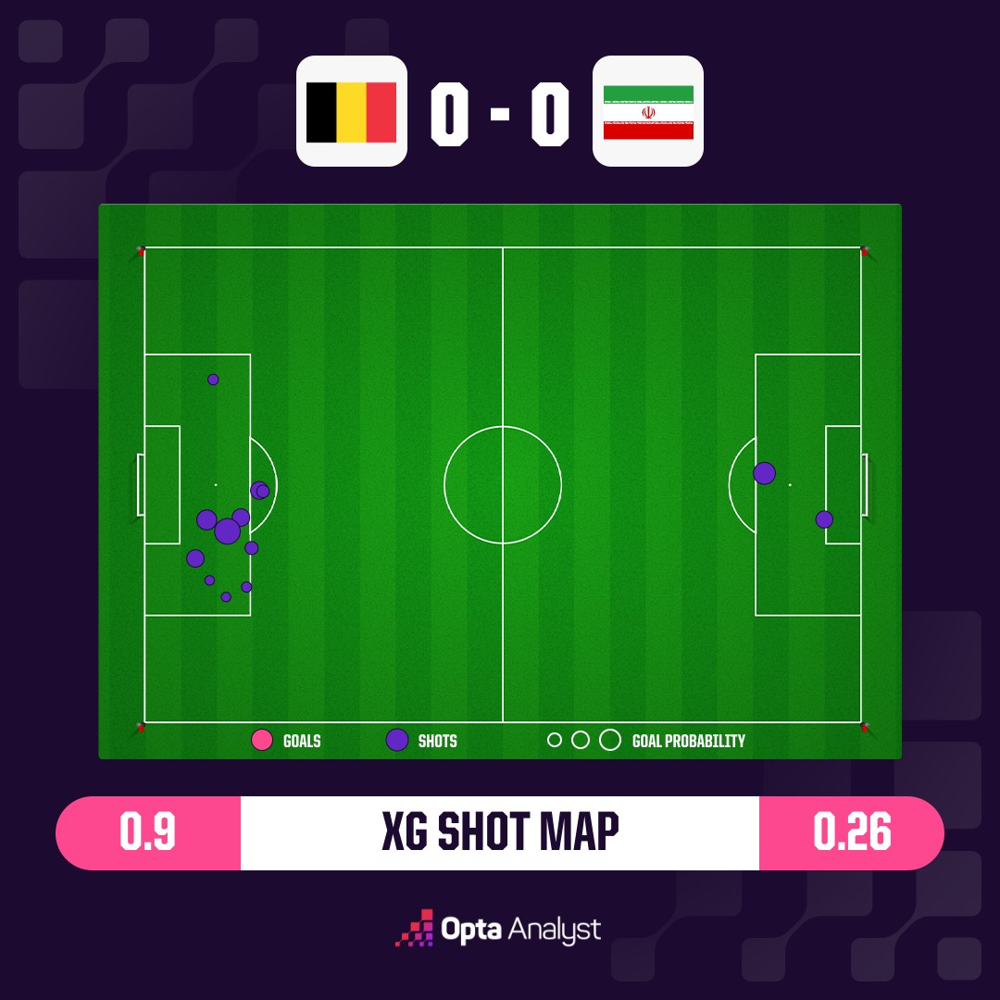
45+9'
Half-time! The referee blows the whistle and it is time for the interval. As we reach the break it is Belgium 0-0 Iran at Los Angeles Stadium.
45+6'
Free-kick! A foul from Thomas Meunier on Mohammad Mohebbi. It is well away from Belgium’s goal, so it is unlikely to result in a chance for Iran.
45+5'
That’s offside! A switched-on defensive line from Iran, as they step up at the right time to catch Alexis Saelemaekers offside, and the assistant referee’s flag is up.
45+4'
A free-kick to Belgium, as Saeid Ezatolahi goes in and fouls Youri Tielemans. However, Iran will not mind giving one away in this area too much, with plenty of distance to their goal.
45+3'
In the last 15 minutes, it is Belgium who have dominated the ball, having seen 89.01% of the possession, yet they have not been able to go and turn that into a goal just yet, with their opponents standing firm.
45+3'
Great block from Saleh Hardani, as they get in the way of an attempt from Kevin De Bruyne that might have been set to cause the goalkeeper some problems. Solid defending from the Iran player.
45+1'
It has been 30 minutes since IR Iran last attempted a shot in this game.
44'
That might have been going in! A fantastic block from Shoja Khalilzadeh, who gets in the way of a goal-bound effort from Alexis Saelemaekers. Would the goalkeeper have been beaten? We will never know.
44'
Belgium have attempted the last 5 shots in this game, IR Iran last shot was taken by Saeid Ezatolahi in the 15th minute.
44'
Save! A big stop from Alireza Beiranvand, who reacts to keep out Maxim De Cuyper's attempt from inside the area.
42'
Chance! A shot from inside the area from Kevin De Bruyne was heading in, but Alireza Beiranvand makes a fine stop to keep it out. A big save from the Iran shot-stopper!
38'
Foul! A free-kick now in a dangerous area for Belgium, after Kevin De Bruyne is fouled by Ehsan Hajisafi. Can Belgium make the most of this opportunity?
38'
Belgium are having plenty of the ball, with 84.00% possession in the last 15 minutes. However, they have been unable to transfer that possessional dominance into a goal during that spell, and are not even generating shooting opportunities, so Iran may not be unduly alarmed.
37'
Mehdi Taremi goes in on Kevin De Bruyne and concedes a foul. The free-kick is not in a particularly dangerous area from Iran’s viewpoint, though.
36'
That’s offside! A switched-on defensive line from Iran, as they step up at the right time to catch Youri Tielemans offside, and the assistant referee’s flag is up.
33'
That is a booking for Saeid Ezatolahi, who has received their first yellow card. They are not happy with the decision, but it is done now, and they will have to be careful for the rest of this game.
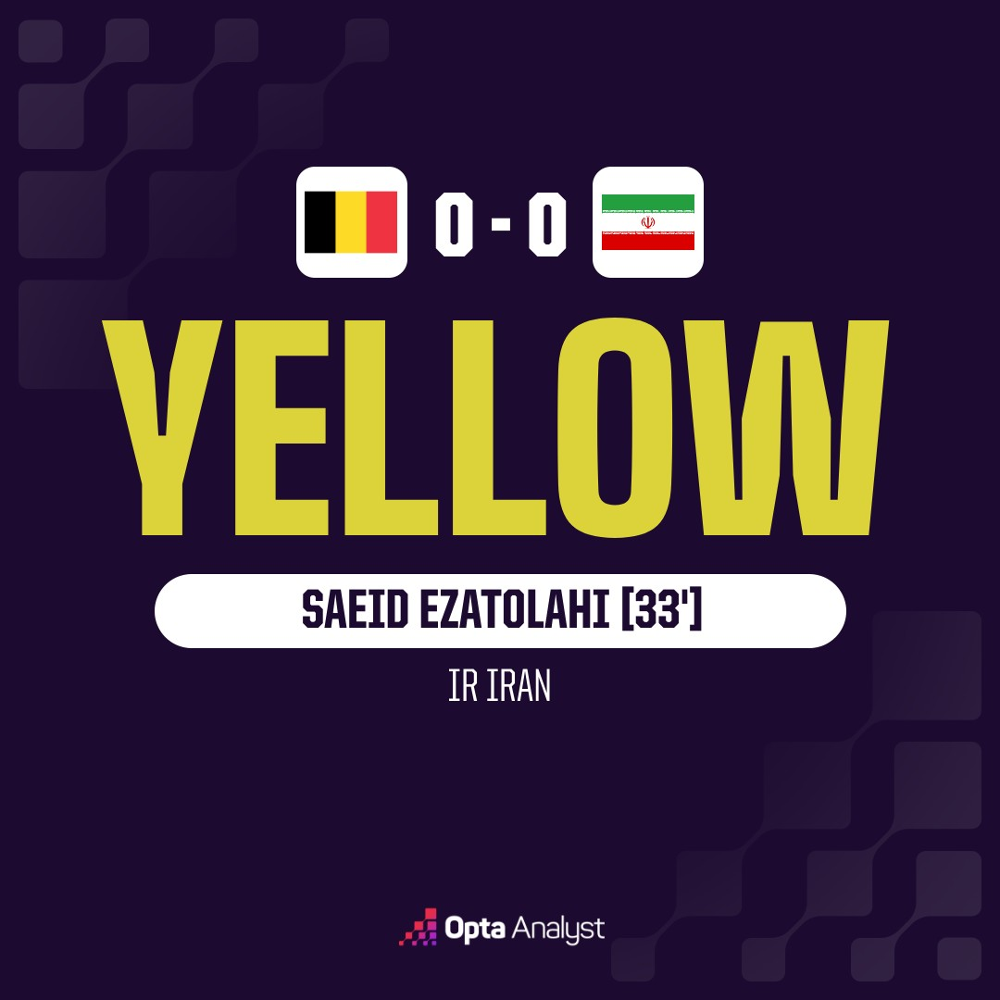
33'
Free-kick! A foul from Saeid Ezatolahi on Youri Tielemans. It is well away from Iran’s goal, so it is unlikely to result in a chance for Belgium.
33'
Belgium have had plenty of the ball in the last 15 minutes, with 77.78% possession compared to just 22.22 % for their opponents. However, there’s not been any goal to come from that possessional dominance just yet.
33'
A lull in this match, as the teams prob and probe, but without much success. It has been 10 minutes since there was an attempt from either side, though Belgium are seeing more of the ball, with 72 per cent possession to Iran’s 28 per cent during that time.
27'
VAR overturns the decision! The video official sees enough reason for the original call to be overturned, and so elects to intervene here.
27'
VAR! The technology is now intervening – will the referee’s decision be overturned, or will it stand? Let’s wait and see.
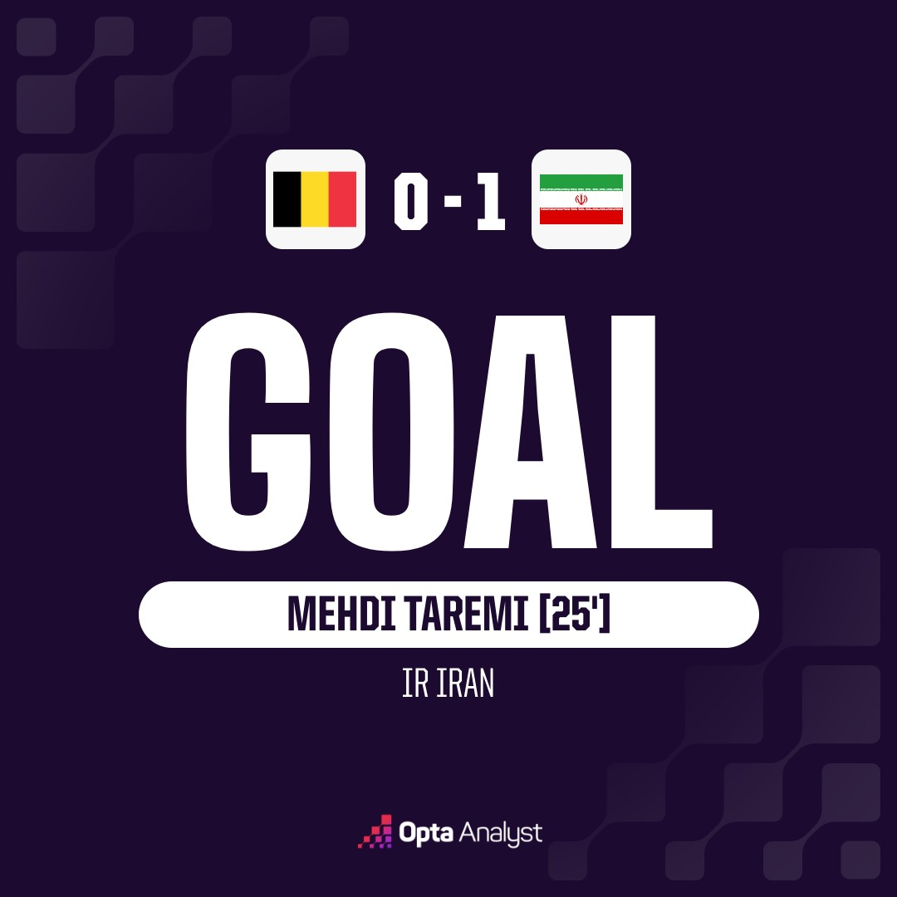
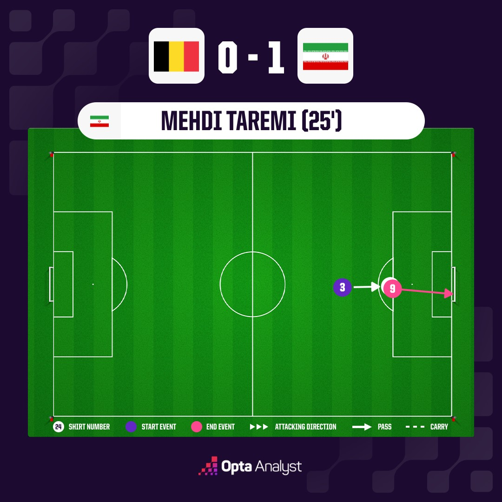
25'
Mehdi Taremi makes a run in behind but the Belgium defensive line were alert, and stepped up in time to catch them offside. That run just needed to be timed better.
23'
No luck! Nathan Ngoy takes on a shot that, had they got it right, might have been set to test the goalkeeper, but instead it is sent off target and Iran come away unscathed.
22'
Corner now for Belgium, as they see a shot from Youri Tielemans deflected out of play for a set-piece. Iran have some defending to do, here. Could this result in a big opportunity?
19'
BLOCK! An intervention from Hossein Kanani might have just prevented a goal, with the defending player getting in the way of an attempt from Leandro Trossard. Solid defending there!
16'
There is plenty of possession for Belgium, with 68.33% compared to Iran 31.67 % in the last 15 minutes. However, Belgium have not been able to turn that dominance of the ball into a goal.
15'
That’s offside! A switched-on defensive line from Belgium, as they step up at the right time to catch Mehdi Taremi offside, and the assistant referee’s flag is up.
15'
A chance goes begging as Saeid Ezatolahi gets off a shot that does not hit the target. They might have done better with that one, but instead it is a goal-kick to Belgium.
14'
CORNER! The pressure is building for Iran as they win a set-piece after Hossein Kanani's attempt is blocked by Thibaut Courtois and diverted out of play.
13'
Free-kick! A foul from Nathan Ngoy on Mehdi Taremi. It is well away from Belgium’s goal, so it is unlikely to result in a chance for Iran.
12'
It’s been tight so far, and Iran are making sure it stays that way with strong defensive discipline and well-timed clearances.
11'
A foul from Brandon Mechele on Saleh Hardani sees Iran win a free-kick, but it is not in a dangerous position, so Belgium should be confident they can defend it easily enough.
10'
Great block from Hossein Kanani, as they get in the way of an attempt from Romelu Lukaku that might have been set to cause the goalkeeper some problems. Solid defending from the Iran player.
9'
Chance! A shot from inside the area from Maxim De Cuyper was heading in, but Alireza Beiranvand makes a fine stop to keep it out. A big save from the Iran shot-stopper!
9'
MISS! A shot from Kevin De Bruyne ends up being off target. They might have done a bit better with that one, but it remains Belgium 0-0 Iran.
8'
That is a disappointing effort from Kevin De Bruyne, who went for glory but got their attempt wrong, and the shot sailed off target. A frustrating moment for Belgium.
3'
That is a booking for Romelu Lukaku, who has received their first yellow card. They are not happy with the decision, but it is done now, and they will have to be careful for the rest of this game.
3'
Free-kick! A foul from Romelu Lukaku on Alireza Beiranvand. It is well away from Belgium’s goal, so it is unlikely to result in a chance for Iran.
2'
A chance now for Belgium to get a good delivery into the box, after the ball is diverted behind for a corner. Belgium have been pushing for what would be a key goal, but Iran have stood firm so far.
1'
Kick-off! Up and running at Los Angeles Stadium, with Belgium getting the ball rolling. Who will come out on top?
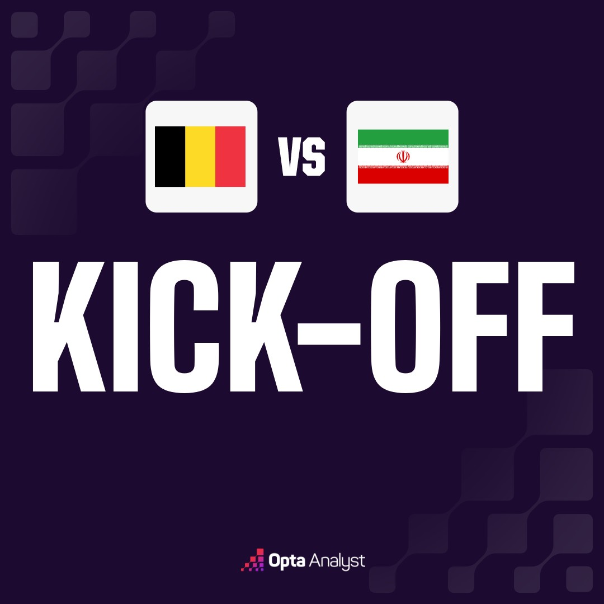
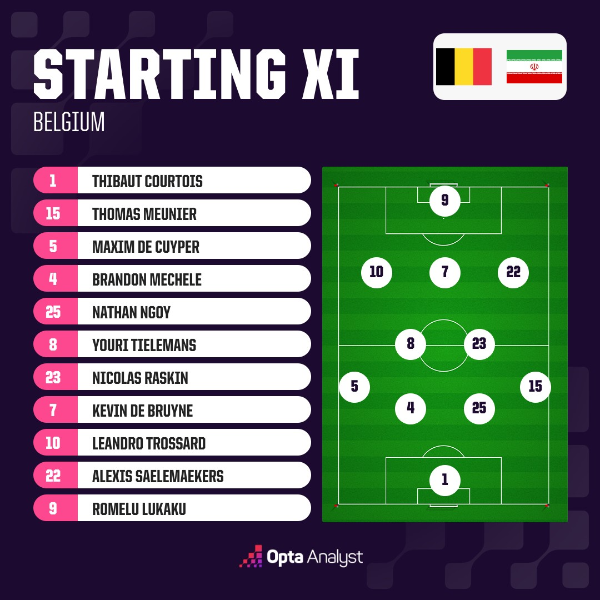
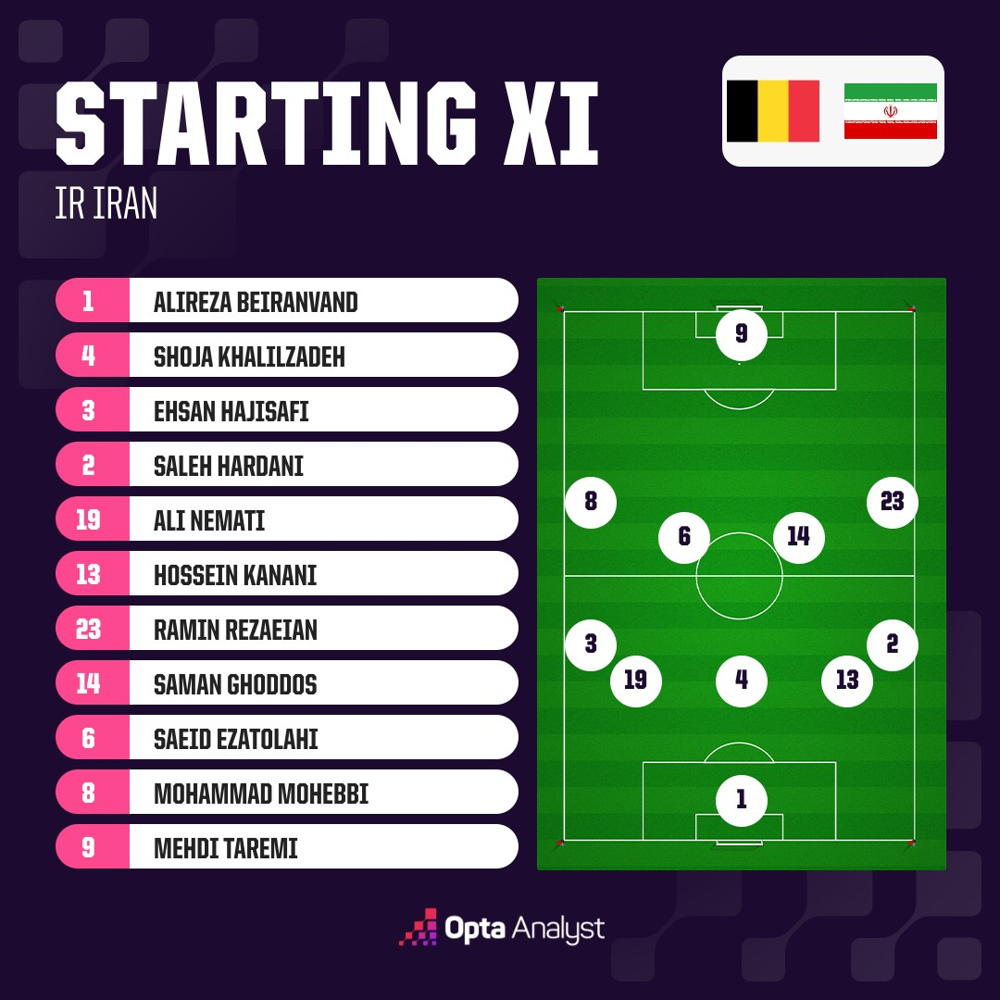
Kevin De Bruyne is making his 15th appearance in the FIFA World Cup.
Thibaut Courtois is making his 17th appearance in the FIFA World Cup.
IR Iran have drawn their last 3 matches in a row
Belgium take on IR Iran on Sunday at Los Angeles Stadium in a meeting of teams who are looking for their first win of the FIFA World Cup group stage.
Belgium earned a point in their opening World Cup group stage match, drawing 1-1 against Egypt on June 15. They are undefeated in their last 14 games in all competitions.
Iran played out a 2-2 draw against New Zealand in their opening World Cup game, a June 15 group stage clash at Los Angeles Stadium, extending their unbeaten streak to four. Ramin Rezaeian and Mohammad Mohebbi were on the scoresheet in the draw. In 2026, they have won three, drawn one, and lost one.
IR Iran and Belgium are second and third in the group, respectively, level on one point. Leading the group on one point are New Zealand. Egypt are fourth, also on one point.
With goals against New Zealand, Rezaeian and Mohebbi are the early leading World Cup scorers for Iran.
Belgium have scored in eight straight matches in all competitions. They haven't been shut out since a World Cup Qualifiers meeting with North Macedonia in October 2025.
In their last six matches in all competitions, Belgium have won four and drawn two. The Belgian side scored 21 and conceded four over that period, scoring first in three of the six contests. They had six first-half goals, while their opponents netted three times in the first 45 minutes. The Iranian side have won three, drawn one and lost two in their last six. The Iranian side scored 13 and conceded five in that period, netting first in one of the six. They had five goals in the first half, while their opponents netted three times before the break.
-
General
Possession 70.1% 70.10629.89429.9% Possession lost in defensive half 27 274747 Possession lost in middle third 36 364848 Duels 98 989696 Duels success rate 53.1% 53.06144.79244.8% Aerial duels 35 353535 Aerial duels won 51.4% 51.42948.57148.6% Successful dribbles 14 1422 Fouls won 9 977 Offsides 3 344 Corner awarded 4 422 -
Distribution
Passes 621 621270270 Long passes 35 355050 Long passes proportion (%) 5.6% 5.63618.51918.5% Passing accuracy 85.8% 85.82973.33373.3% Passes in opponents' half 425 425124124 Passing accuracy in opponents' half (%) 84.0% 8461.2961.3% Total passes in the final third 262 2626565 Passing accuracy in final third (%) 78.2% 78.24446.15446.2% Forward passes 395 395177177 Forward passes (%) 63.6% 63.60765.55665.6% Through balls 5 522 Final third entries 79 794343 Penalty area entries 55 552020 Total open play crosses 26 2666 Crosses 32 3288 Crossing accuracy 18.8% 18.752525.0% -
Attack
Goals 0 000 Shots 23 2377 Shots on target 7 733 Blocked shots 6 611 Headed shots 1 122 Shots outside the box 3 311 Shots inside the box 20 2066 Shots accuracy excluding blocked shots 41.2% 41.1765050.0% Shooting accuracy 30.4% 30.43542.85742.9% Key Passes 16 1666 -
Defence
Tackles 12 121919 Tackles success rate 58.3% 58.33357.89557.9% Clearances 11 115151 Interceptions 3 31212 Recoveries 63 635252 Attacking third recovery 6 633 Defensive third recovery 28 283333 Midfield third recovery 29 291616 Recoveries in attacking half (%) 9.5% 9.5245.7695.8% -
Discipline
Fouls conceded 7 799 Yellow cards 1 111 Red cards 1 100